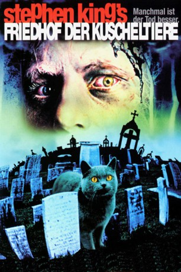
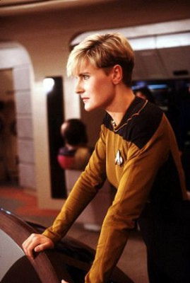

#3992 Friedhof der Kuscheltiere
Alternativ: Pet Sematary
 
 IMDB-Wertung: 6.6 / 10
IMDB-Wertung: 6.6 / 10  Metascore: 0
Metascore: 0 
Der Arzt Louis Creed zieht mit seiner Frau Rachel, den Kindern Ellie und Gage und dem Kater Church aufs Land. Ihr neuer Nachbar Judd warnt sie vor der Landstraße. Für die dort überfahrenen Haustiere ist ein eigener Friedhof eingerichtet worden, gleich neben einem mythenumwobenen Indianerfriedhof, der angeblich Tote wiederkehren lässt. Als eines Tages ihre Katze überfahren wird, begräbt Louis den Leichnam auf dem Indianerfriedhof, und tatsächlich kehrt das Tier lebendig zurück ...
Jahr: 1989
Dauer: 102 Minuten
FSK: 16
Land: USA Studio: Paramount PicturesTonspuren: DD5.1 - ,
Untertitel: Englisch,
Auflösung: 1080p (1920x1080) Größe: 7290 MB
Genre: Horror, Fantasy
Regisseur: Mary Lambert
Drehbuch: Jane Austen
Soundtrack:
Darsteller:
- Dale Midkiff als Louis Creed
 Fred Gwynne als Jud Crandall
Fred Gwynne als Jud Crandall-  Denise Crosby als Rachel Creed
 Brad Greenquist als Victor Pascow
Brad Greenquist als Victor Pascow Miko Hughes als Gage Creed
Miko Hughes als Gage Creed- Blaze Berdahl als Ellie Creed
 Susan Blommaert als Missy Dandridge
Susan Blommaert als Missy Dandridge- Liz Davies als Girl at Infirmary
 Stephen King als Minister
Stephen King als Minister Chuck Courtney als Bill Baterman
Chuck Courtney als Bill Baterman- Donnie Greene als Orinco Driver
- Michael Lombard als Irwin Goldman
- Mara Clark als Marcy Charlton
- Kavi Raz als Steve Masterton
- Mary Louise Wilson als Dory Goldman
- Andrew Hubatsek als Zelda
- Kara Dalke als Candystriper
- Matthew August Ferrell als Jud as a Child
- Lisa Stathoplos als Jud's Mother
- Elizabeth Ureneck als Rachel as a Child
- Peter Stader als Timmy Baterman
- Richard Collier als Young Jud
- Chuck Shaw als Cop
- Dorothy McCabe als Seatmate #1
- Mary R. Hughes als Seatmate #2
- Eleanor Grace Courtemanche als Logan Airport Gate Agent
- Lila Duffy als Budget Clerk
- John David Moore als Hitchhike Driver
- Beau Berdahl Oliver als Ellie Creed II
Datei: X:\Person\Stephen King\Friedhof der Kuscheltiere (1989, FSK16, 1920x1080).mkv seit 11.07.2016
Festplatte: HD Collection-7+mehr(A-Z)+Person
 Es gibt insgesamt 44 Filme in der Gruppe 'Person\Stephen King'
Es gibt insgesamt 44 Filme in der Gruppe 'Person\Stephen King'